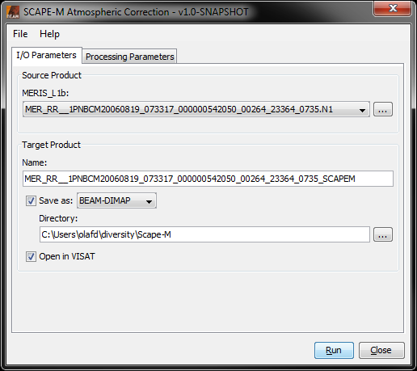
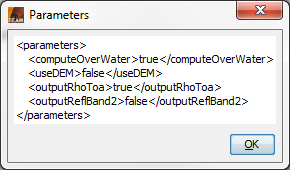
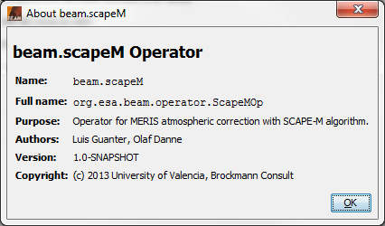
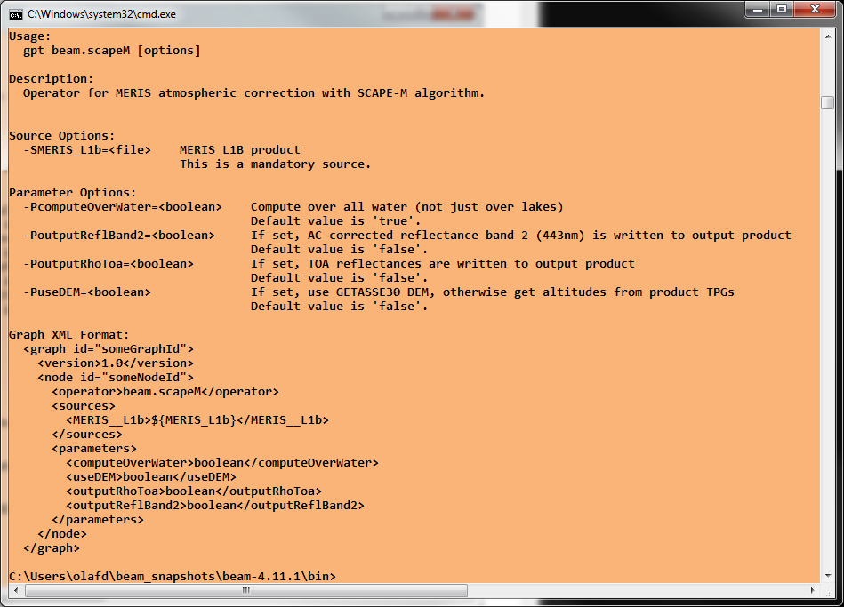
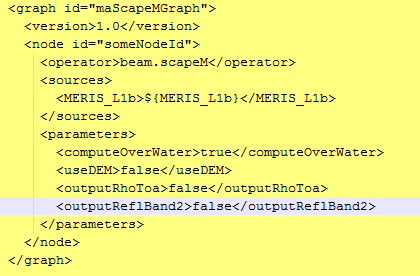

| Scape-M Processing |
|
The processor uses a Look-Up Table (LUT) which was generated from MODTRAN radiative transfer code and which provides the atmospheric parameters from multidimensional interpolation. This LUT is included in the Scape-M processor package, no additional user action is required.
Selecting the Scape-M Processor command from the VISAT tool menu pops up the following dialog:

Source Product: Here the user specifies the MERIS L1b (RR or FR) source product. The combo box presents a list of all products open in VISAT. The user may select one of these or, by clicking on the button next to the combo box, choose a product from the file system.
Name: Used to specify the name of the target product.
Save to: Used to specify whether the target product should be saved to the file system. The combo box presents a list of file formats, currently BEAM-DIMAP, GeoTIFF, and HDF5.
Open in VISAT: Used to specify whether the target product should be opened in VISAT. When the the target product is not saved, it is opened in VISAT automatically.
Selecting the Processing Parameters tab in the Scape-M Processing Dialog switches to the following view:

Use GETASSE30 DEM: If selected, the processor will get the required pixel altitude information from the GETASSE30 Digital Elevation Model. If not selected or if GETASSE30 is not installed, the information is taken from an available altitude band (if created earlier for this product), or a tie point grid.
Write rhoToa: If selected, the processor will write the TOA reflectances (an intermediate result of the algorithm) to the target product for comparison purposes.
Write 443nm reflectance band: If selected, the processor will write the atmosphere-corrected band 2 (443nm) to the target product, although the atmospheric correction for this band is known to be a problem in the algorithm. In opposite to the description in [1], the original retrieval will be written, and no interpolation is applied.
Selecting the File entry in the Menu Bar opens the following view:

Open Parameters...: When this entry is selected, an 'Open File' dialog will appear. Here, a BEAM GPF parameters XML file can be selected, containing Scape-M processing parameters which were saved earlier. These parameters will be loaded and applied for an upcoming processing.
Save Parameters...: When this entry is selected, a 'Save File' dialog will appear. Here, the current set of BEAM GPF parameters can be saved into a BEAM GPF parameters XML file for later re-usage.
Display Parameters...: When this entry is selected, the current set of BEAM GPF parameters will be displayed in XML format (see below).

Selecting the Help entry in the Menu Bar opens the following view:

Help: When this entry is selected, this online help is opened in a separate window.
About...: When this entry is selected, an 'About' dialog for the current processor is opened (see below).


Run: When this button is clicked, the processing will be started with the selected parameters.
Close: When this button is clicked, the processor toolwindow will be closed.

